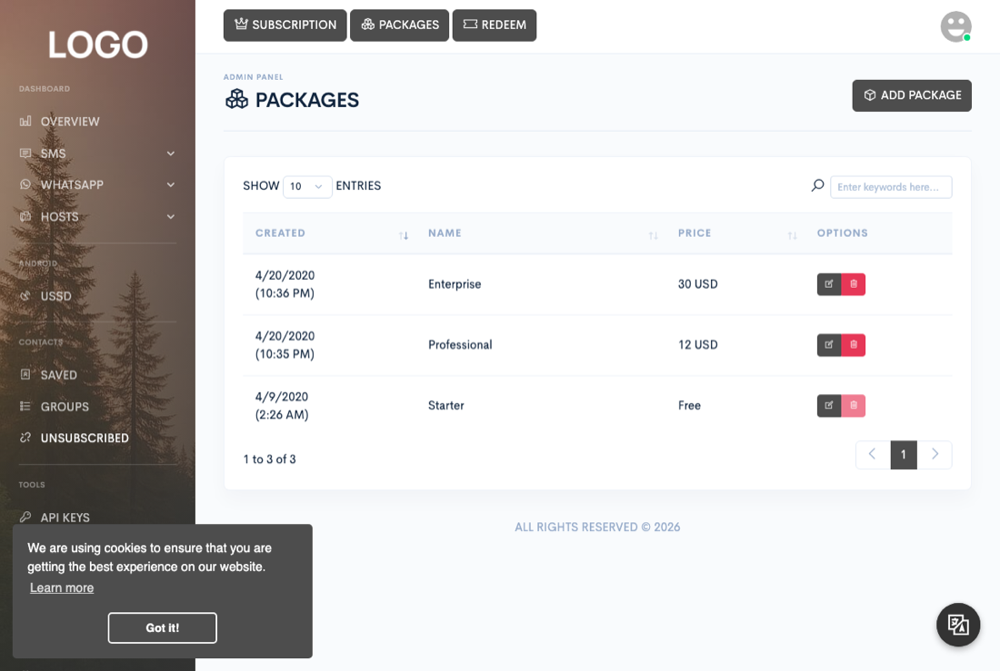

Administration
Billing
Configure what customers pay for, grant or revoke access by hand, and pay out partners who share their devices.

Five screens under Admin move money or entitlements: Packages, Subscriptions, Transactions, Payouts, and Vouchers. Every claim below about what a button actually does comes from what the platform actually does when you click it, not from the button's label.
Defining subscription packages
Admin → Packages defines the plans customers subscribe to: a price, which services are enabled (SMS, WhatsApp, Android USSD, API, webhooks, message templates, automated actions, flows, AI), and a set of numeric limits — send/receive limits for SMS and WhatsApp, device count, contact count, scheduled-message count, API key count, webhook count, and action count — so this is also where you control per-package limits across the board. The default/free package is reserved and can't be deleted. If free package auto-assignment is turned on (from the Settings screen under Admin → Overview), every new registration is put on it automatically.
Granting a subscription manually
Admin → Subscriptions lets an admin manually put a customer on a package, with a chosen duration in months, without them paying anything through a gateway. Doing this:
- Creates a transaction record at the package's list price marked as a manual grant — this is a bookkeeping record only; no payment gateway is contacted and no money actually moves.
- If the user already has a subscription that hasn't expired yet, the new expiry is calculated from their current expiry date, not from now — so granting a subscription to someone with time left extends it. If they have no subscription or it already expired, the new expiry counts from the moment you submit the form.
- Removes whatever subscription the user currently has before adding the new one. A user only ever has one active subscription; assigning a new package replaces it outright rather than adding a second one.
The only action on an existing subscription from this screen is delete — there's no admin "edit" or "cancel" action here. Deleting it just removes that subscription; it doesn't refund the transaction it was created from or touch the customer's credits.
Subscriptions don't expire on their own the moment the clock passes their date — that cleanup only happens when the subscription cron job runs (email warning 5 days before expiry, then deletion once actually expired). See the Cron jobs page for the full schedule; if cron isn't configured, expired subscriptions simply stay in place.
Reviewing transactions
Admin → Transactions is a read-only ledger: every completed purchase, manual grant, and voucher redemption, with customer, item, amount, duration, and provider. There is no refund, void, or edit action on this screen at all. Reversing a purchase means going to Subscriptions and deleting the subscription it created, and/or adjusting the customer's credits from Users by hand; neither of those touches the transaction record itself, which stays as a permanent log of what was charged.
Approving partner payouts
Admin → Payouts handles cash-out requests from partner accounts — see the Android gateway page for how a partner earns credits by sharing a device in the first place. A partner requests a payout from their own dashboard once their earnings clear the platform's minimum payout threshold; as soon as that request is created, their earnings balance is decreased by the requested amount — the money is already taken out of their visible balance before an admin does anything. (The platform's own cut of every shared-device send — a percentage you set from the Settings screen under Admin → Overview — is already deducted before it ever reaches the partner's earnings.)
The two buttons on each row do not move any money themselves:
- Approve emails the partner a "payout paid" notice and deletes the payout request row. It does not call PayPal, Payoneer, or any other API — the assumption is that the admin has already paid the partner manually, out of band, using the amount, provider, and address shown on the row, and is only using this button to close out the request and notify them.
- Reject reverses the hold from the request step — it credits the partner's earnings balance back, emails a rejection notice, and deletes the request row.
Generating vouchers
Admin → Vouchers generates redeemable codes for a specific package and duration. Add voucher can create up to 1,000 codes in one submission; each code is independent and randomly generated, so generating a batch of 50 makes 50 separate one-time-use vouchers, not one code good for 50 redemptions.
Redemption (available to any logged-in customer who enters a code) puts the redeeming user on the voucher's package for the voucher's duration, using the same extend-if-still-active-else-start-now logic as an admin-granted subscription, and then deletes the voucher — a code only works once, and there's no way to see after the fact who redeemed a given code, since the record of it is gone. The copy button on each row copies that voucher's code to the clipboard; the trash icon in the page header does a bulk delete of whatever rows are checked and, like the per-row delete, just removes the voucher — it has no effect on anyone who already redeemed it.